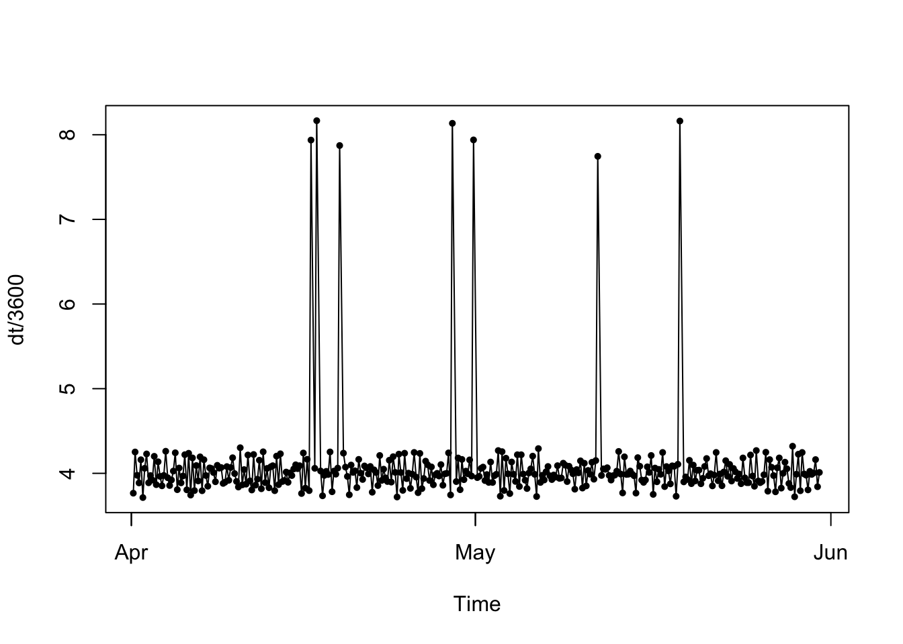

Hidden Markov Modeling Tutorial
Marie Gilbertson
2023-05-04
Preamble
What this tutorial does:
- Demonstrates a simple example of fitting hidden Markov models (HMM) to animal movement data.
What this tutorial does NOT do:
- Teach you the underlying theory for HMMs, explore the vast range of uses of HMMs, or teach how to troubleshoot inital parameter selection. For that kind of information, may I suggest checking out the very thorough guide to using the R package momentuHMM. This tutorial is meant as a technical and very simple introduction to fitting HMMs with momentuHMM.
Now that we’ve got the disclaimers out of the way, let’s get started!
First things first, let’s load the R packages we’ll need.
##### Clear Environment #####
remove(list=ls())
#### load libraries ####
library(momentuHMM)
library(ggplot2)
library(adehabitatHR)
library(lubridate)Simulate data
To make it possible for anyone to replicate this workflow, we’re going to simulate some animal movement data.
We are going to be working through an example of using HMMs to identify different “behavioral states” for an animal, based on their movement data. That means that our simulated individual needs to have mutliple behavioral states. To keep things simple, we’ll simulate a resident state characterized by short steps, meandering turning angles, and attraction to a central home range. Our other behavioral state with be a traveling state where our animal takes longer steps with restriced turning angles (we’ll have them generally move sort of straight ahead).
To do these simulations, we can just use a simple biased correlated random walk (BCRW) movement model, but we will need a few functions to make that happen. The R functions we’ll use for this originally come from this lovely paper from Long et al 2014.
Note: if you’re not comfortable with how we write functions in R, don’t sweat it. One of these days I’ll make a little tutorial about writing functions. In the meantime, just trust me that this works and that you don’t need this to analyze your own real data.
## first we have a function for simulating a biased correlated random walk
BCRW_sim <- function(
n=100, #number of movement steps
h=0.25, #step length parameter
rho=0, #bias correlation parameter (0-1, where 0 -> unbiased, uncorrelated random walk, and 1 -> biased, deterministic movement)
b=1, #bias strength parameter
c=0, #bias distance decay parameter
y0=c(0,0), #animal starting location
ya=c(0,0) #animal attraction location
){
#---- Main Function ------
y <- y0
y.t <- y
theta.y <- runif(1,-pi,pi) #first direction is random
for (i in 1:n){
delta <- sqrt(sum((ya-y)^2)) #distance to attraction point
psi <- atan2(ya[2]-y[2],ya[1]-y[1]) #angle toward attraction point
beta <- tanh(b*delta^c) #bias effect
mu <- w.circ.mean(c(theta.y,psi),c(1-beta,beta)) #biased direction
theta.y <- rwrpnorm(1,mu,rho) #"draw" actual turning angle based on "expected" angle, constrained by bias correlation parameter
#step length from chi-squared distribution
d.y <- h*rchi(1)
y. <- y + c(d.y*cos(theta.y),d.y*sin(theta.y)) #calculate this "step"
#Build the trajectory
y.t <- rbind(y.t,y.)
#Save for next step!
y <- y.
}
y.out <- data.frame(y.t,row.names=NULL)
colnames(y.out) <- c("x","y")
#add date/time to trajectory; considers date/time to be on a per-minute basis
date <- seq(1, 60*(n+1), 60)
y.out$date <- as_datetime(date)
return(y.out)
}
#Weighted circular mean calculation (for the bias direction)
w.circ.mean <- function (x,w)
{
sinr <- sum(w*sin(x))
cosr <- sum(w*cos(x))
circmean <- atan2(sinr, cosr)
circmean
}For our resident state, we’ll have our animal’s movements be biased towards its first location when it started in this movement state; this will cause them to stick around that general location. For our traveling state, we’ll set the bias to some distant point so they head off in some other direction. We’ll otherwise use the step length and bias parameters to create our two behavioral states. We’ll also have our animal switch back and forth between the states a few times.
set.seed(32794)
#### Simulate Dispersal ####
## We'll simulate dispersal in two "phases"
## Phase 1: resident around point (0,0)
## Phase 2: traveling toward point (50, 50)
## Phase 3: resident around new range
## Phase 4: traveling toward point (150, 100)
## Phase 5: resident around new range
# set duration (in number of locations/fixes) for phase 1
phase1.n <- 100
# simulate and view phase 1 movement
p1 <- BCRW_sim(n = phase1.n, h = 2, rho = 0.8, y0 = c(0,0), ya = c(0,0))
ggplot(p1, aes(x = x, y = y)) + geom_path() +
coord_fixed() + theme_bw()# take the final location from phase 1 to use as the starting location for phase 2
end1 <- tail(p1[,c("x", "y")],1)
# simulate and view phase 2 movement
phase2.n <- 30
p2 <- BCRW_sim(n = phase2.n, h = 5, rho = 0.85, y0 = c(end1$x, end1$y), ya = c(500, 500))
ggplot(p2, aes(x = x, y = y)) + geom_path() +
coord_fixed() + theme_bw()end2 <- tail(p2[,c("x", "y")],1)
# simulate and view phase 3 movement
phase3.n <- 100
p3 <- BCRW_sim(n = phase3.n, h = 2, rho = 0.8, y0 = c(end2$x, end2$y), ya = c(end2$x, end2$y))
ggplot(p3, aes(x = x, y = y)) + geom_path() +
coord_fixed() + theme_bw()# take the final location from phase 3 to use as the starting location for phase 4
end3 <- tail(p3[,c("x", "y")],1)
# simulate and view phase 2 movement
phase4.n <- 30
p4 <- BCRW_sim(n = phase4.n, h = 5, rho = 0.85, y0 = c(end3$x, end3$y), ya = c(1000, 0))
ggplot(p4, aes(x = x, y = y)) + geom_path() +
coord_fixed() + theme_bw()end4 <- tail(p4[,c("x", "y")],1)
# simulate and view phase 3 movement
phase5.n <- 100
p5 <- BCRW_sim(n = phase5.n, h = 2, rho = 0.8, y0 = c(end4$x, end4$y), ya = c(end4$x, end4$y))
ggplot(p5, aes(x = x, y = y)) + geom_path() +
coord_fixed() + theme_bw()# remove last step of each phase trajectory so no duplicated locations when all phases are combined...except sometimes GPS collars accidentally transmit the same location twice (which can be a problem in HMMs), so let's leave a couple duplicate locations for use to "clean up" later.
p1 <- p1[-c(nrow(p1)),]
p2 <- p2[-c(nrow(p2)),]
p3 <- p3[-c(nrow(p3)),]
p4 <- p4[-c(nrow(p4)),]
# combine phases and view
p <- rbind(p1, p2, p3, p4, p5)
ggplot(p, aes(x = x, y = y)) + geom_path() +
coord_fixed() + theme_bw()# add time stamps; we'll say that we have locations every 4 hours
p$date <- seq(as.POSIXct("2017-04-01 04:00:00", tz = "America/Chicago"), by = (4*60*60), length.out = nrow(p))To be more like real telemetry data, let’s add some noise to our time stamps. GPS collars really never collect a location at perfect intervals, and this can impact our HMM, so let’s allow all our time stamps to randomly vary by up to 10 minutes before or after the “scheduled,” every-4-hours time.
p$real.time <- p$date + sample(c((-10*60):(10*60)), size = nrow(p), replace = T)
head(p)## x y date real.time
## 1 0.0000000 0.0000000 2017-04-01 04:00:00 2017-04-01 04:04:40
## 2 -0.6974744 -3.0428187 2017-04-01 08:00:00 2017-04-01 07:50:36
## 3 -1.2716228 -1.6352010 2017-04-01 12:00:00 2017-04-01 12:05:44
## 4 -1.0848808 -0.2331147 2017-04-01 16:00:00 2017-04-01 16:04:21
## 5 -2.4086289 1.3874874 2017-04-01 20:00:00 2017-04-01 19:57:33
## 6 -1.5935481 0.7575514 2017-04-02 00:00:00 2017-04-02 00:07:11In reality, we’d also be missing some locations because, for example, the collar would fail to transmit the animal’s location. These missing locations can impact our HMM, so let’s also randomly drop 2% of our locations.
drop <- sample(1:nrow(p), size = 0.02*nrow(p), replace = F)
pd <- p[-c(drop),]
pm <- p[drop,] # Just for fun, let's save these dropped locations in a separate object for now. You'll see why later...
pm <- pm[order(pm$real.time),]
ggplot(p, aes(x = x, y = y, color = real.time)) + geom_path() +
coord_fixed() + theme_bw() + ggtitle("Simulated 'messy' data")Now we have a nice simulated dataset with a little added “messiness” to replicate what you might experience with real animal movement data. Naturally, that means it’s time to “clean up” our data!
Prepare animal movement data
What’s the point in making our data “messy” if we’re just going to go and clean it up, you ask? Well, if you’re working with real data, it’s going to messy and it does no one any good to pretend otherwise.
To begin with, let’s explore our data a little bit, pretending that we didn’t just simulate this ourselves. We can start by making our animal movement data an “ltraj” object so we can use some of the functions in the very handy adehabitatLT package.
traj <- as.ltraj(xy = pd[,c("x", "y")], date = pd$real.time, id = "ind.1")
traj##
## *********** List of class ltraj ***********
##
## Type of the traject: Type II (time recorded)
## * Time zone: America/Chicago *
## Irregular traject. Variable time lag between two locs
##
## Characteristics of the bursts:
## id burst nb.reloc NAs date.begin date.end
## 1 ind.1 ind.1 354 0 2017-04-01 04:04:40 2017-05-31 03:56:53
##
##
## infolocs provided. The following variables are available:
## [1] "pkey"We can see that we now have an “ltraj” object containing the movement data for “ind.1.” There are 353 relocations, but since we haven’t added any “NAs” to our data, our object supposedly doesn’t have missing data (but you and I know that’s not true). We can also see the start and end dates for our data. Lastly, we can also see that we have both locations and time stamps (ltraj considers these “Type II” trajectories), and that there is a variable time lag between relocations.
An ltraj object is fundamentally a list of animal movement trajectories. If we want to view the trajectory data itself, we can access it using what I’ll call normal R list syntax. In other words, if we want to look at the first list item, we use double brackets to do so. In this case, when we look at the data itself, we see that converting our simulated data to an ltraj object has calculated lots of useful things like step lengths, turning angles, etc.
head(traj[[1]])## x y date dx dy dist dt R2n abs.angle rel.angle
## 1 0.0000000 0.0000000 2017-04-01 04:04:40 -0.6974744 -3.04281873 3.121733 13556 0.000000 -1.79612362 NA
## 2 -0.6974744 -3.0428187 2017-04-01 07:50:36 -0.5741484 1.40761776 1.520209 15308 9.745216 1.95808295 -2.5289787
## 3 -1.2716228 -1.6352010 2017-04-01 12:05:44 0.1867420 1.40208625 1.414468 14317 4.290907 1.43838692 -0.5196960
## 4 -1.0848808 -0.2331147 2017-04-01 16:04:21 -1.3237481 1.62060214 2.092525 13992 1.231309 2.25571246 0.8173255
## 5 -2.4086289 1.3874874 2017-04-01 19:57:33 0.8150808 -0.62993601 1.030134 14978 7.726614 -0.65796607 -2.9136785
## 6 -1.5935481 0.7575514 2017-04-02 00:07:11 1.4888048 0.05139977 1.489692 13370 3.113280 0.03451048 0.6924766We can then plot lots of useful things! For example, we can look at the trajectory itself, or things like the sampling frequency/fix rate over time. In addition, we can look at “net squared displacement” (this column is called “R2n” in the ltraj object); this shows an animal’s travel or displacement from its starting location, which can be handy for spotting shifts to new ranges.
# plot the trajectory
plot(traj)# plot sampling frequency (note how you can see some variability in the fix rate AND that we're missing locations!)
plotltr(traj, "dt/3600") # dt = change in time between locations, and since it's in seconds, we'll divide by 3600 to view time in hours
# plot net squared displacement
plotltr(traj, "R2n") # we can see that this individual had three main ranges, with a couple of shifts in between themNow that we’ve taken a look at our data, to fit HMMs, we need to make our trajectory regular: this means we need equal time steps between locations. We can fix some of the irregularity by just rounding the timing of our fixes to the nearest hour, since our data was “collected” at the top of the hour every 4 hours. If our data were collected every 15 minutes, we could simply round to that fix schedule. Let’s start by doing this rounding procedure:
# let's convert trajectory object to a dataframe
ddf <- ld(traj)
head(ddf)## x y date dx dy dist dt R2n abs.angle rel.angle id burst pkey
## 1 0.0000000 0.0000000 2017-04-01 04:04:40 -0.6974744 -3.04281873 3.121733 13556 0.000000 -1.79612362 NA ind.1 ind.1 ind.1.2017-04-01 04:04:40
## 2 -0.6974744 -3.0428187 2017-04-01 07:50:36 -0.5741484 1.40761776 1.520209 15308 9.745216 1.95808295 -2.5289787 ind.1 ind.1 ind.1.2017-04-01 07:50:36
## 3 -1.2716228 -1.6352010 2017-04-01 12:05:44 0.1867420 1.40208625 1.414468 14317 4.290907 1.43838692 -0.5196960 ind.1 ind.1 ind.1.2017-04-01 12:05:44
## 4 -1.0848808 -0.2331147 2017-04-01 16:04:21 -1.3237481 1.62060214 2.092525 13992 1.231309 2.25571246 0.8173255 ind.1 ind.1 ind.1.2017-04-01 16:04:21
## 5 -2.4086289 1.3874874 2017-04-01 19:57:33 0.8150808 -0.62993601 1.030134 14978 7.726614 -0.65796607 -2.9136785 ind.1 ind.1 ind.1.2017-04-01 19:57:33
## 6 -1.5935481 0.7575514 2017-04-02 00:07:11 1.4888048 0.05139977 1.489692 13370 3.113280 0.03451048 0.6924766 ind.1 ind.1 ind.1.2017-04-02 00:07:11# we're also going to update the "print.POSIXct" function so that it always gives HH:MM:SS (otherwise, it'll often drop the HH:MM:SS for midnight)
print.POSIXct <- function(x,...)print(format(x,"%Y-%m-%d %H:%M:%S"))
# now, we'll write a function for rounding date/time to nearest hour (it will also return an error if a time is greater than 15 minutes from nearest hour)
round.datetime <- function(x){
minute <- as.numeric(format(x, "%M"))
if(minute<30){ # if time is before HH:30, then round down an hour
out <- as.POSIXct(paste0(format(x, "%Y-%m-%d %H"), ":00:00"), tz = "America/Chicago")
}else if(minute>=30){ # if time is at or after HH:30, round up an hour
hour <- as.numeric(format(x, "%H"))+1
if(hour==25){ # if rounding up an hour makes hour = 25, make that 1am on the next day
hour <- 1
day <- as.Date(x, tz = "America/Chicago")+1
out <- as.POSIXct(paste0(day, " ", hour, ":00:00"), tz = "America/Chicago")
}else{
out <- as.POSIXct(paste0(format(x, "%Y-%m-%d"), " ", hour, ":00:00"), tz = "America/Chicago")
}
}
# check the time difference between the original time and the new rounded time; if it's >15 min, return an error
dt <- abs(difftime(x, out, tz = "America/Chicago", units = "mins"))
if(dt > 15){
out <- "error"
}else{
out <- format(out, "%Y-%m-%d %H:%M:%S") # need to output as character string and convert back to POSIXct later
}
return(out)
}
# let's use our new function to round date/times and view number of fixes that fell more than 15 min from top of the hour
ddf$round.time <- sapply(ddf$date, round.datetime)
head(ddf)## x y date dx dy dist dt R2n abs.angle rel.angle id burst pkey round.time
## 1 0.0000000 0.0000000 2017-04-01 04:04:40 -0.6974744 -3.04281873 3.121733 13556 0.000000 -1.79612362 NA ind.1 ind.1 ind.1.2017-04-01 04:04:40 2017-04-01 04:00:00
## 2 -0.6974744 -3.0428187 2017-04-01 07:50:36 -0.5741484 1.40761776 1.520209 15308 9.745216 1.95808295 -2.5289787 ind.1 ind.1 ind.1.2017-04-01 07:50:36 2017-04-01 08:00:00
## 3 -1.2716228 -1.6352010 2017-04-01 12:05:44 0.1867420 1.40208625 1.414468 14317 4.290907 1.43838692 -0.5196960 ind.1 ind.1 ind.1.2017-04-01 12:05:44 2017-04-01 12:00:00
## 4 -1.0848808 -0.2331147 2017-04-01 16:04:21 -1.3237481 1.62060214 2.092525 13992 1.231309 2.25571246 0.8173255 ind.1 ind.1 ind.1.2017-04-01 16:04:21 2017-04-01 16:00:00
## 5 -2.4086289 1.3874874 2017-04-01 19:57:33 0.8150808 -0.62993601 1.030134 14978 7.726614 -0.65796607 -2.9136785 ind.1 ind.1 ind.1.2017-04-01 19:57:33 2017-04-01 20:00:00
## 6 -1.5935481 0.7575514 2017-04-02 00:07:11 1.4888048 0.05139977 1.489692 13370 3.113280 0.03451048 0.6924766 ind.1 ind.1 ind.1.2017-04-02 00:07:11 2017-04-02 00:00:00nrow(ddf[ddf$round.time=="error",])## [1] 0# Great! None of our fixes were more than 15 minutes from the top of the hour - that's good since that's how we simulated it in the first place!
# let's now check the frequency of our fixes with these new rounded times
# we can loop through the rows of our data and compare each time stamp to the one before it:
ddf$dt2 <- NA
for(i in 2:nrow(ddf)){
ddf$dt2[i] <- difftime(ddf$round.time[i], ddf$round.time[i-1], tz = "America/Chicago", units = "hours")
}
table(ddf$dt2)##
## 4 8
## 346 7We can that our data now has a nice, regular fix rate of every four hours, with the exception of the seven fixes that are missing (where the fix rate is eight hours).
To finish regularizing our data, we’ll interpolate our missing locations! momentuHMM has a handy wrapper function (crawlWrap) that will allow us to to complete this interpolation. Note that I will use the same hand-waving as the momentuHMM user guide and say: for the choice of initial parameters in crawlWrap, check out the crawl package documentation.
## let's take a look at the distribution of our step lengths and turning angles
hist(ddf$dist, breaks = 10)hist(ddf$rel.angle)# for crawlWrap function, just keep the ID, time, x, and y columns
ddf <- ddf[,c("id", "round.time", "x", "y")]
colnames(ddf) <- c("ID", "time", "x", "y")
ddf$time <- as.POSIXct(ddf$time, tz = "America/Chicago") # time MUST be POSIXct class for the crawlWrap function.
# use crawlWrap() to fit a continuous time correlated random walk and predict locations every 4 hours
d.crw <- crawlWrap(obsData=ddf, timeStep="4 hours",
theta=c(2, 0), fixPar=c(NA,NA))## Fitting 1 track(s) using crawl::crwMLE...
## Individual ind.1...## Beginning SANN initialization ...## Beginning likelihood optimization ...## DONE
##
## Predicting locations (and uncertainty) at 4 hours time steps for 1 track(s) using crawl::crwPredict... DONEcd <- d.crw$crwPredict
head(cd)## TimeNum locType ID time x y mu.x nu.x mu.y nu.y se.mu.x se.nu.x se.mu.y se.nu.y speed
## 1 414177 p ind.1 2017-04-01 04:00:00 0.0000000 0.0000000 0.0000000 -0.103352048 0.0000000 -0.56902551 0 0.9493604 0 0.9493604 0.5783353
## 3 414181 p ind.1 2017-04-01 08:00:00 -0.6974744 -3.0428187 -0.6974744 -0.192945894 -3.0428187 -0.24971841 0 0.8685887 0 0.8685887 0.3155747
## 5 414185 p ind.1 2017-04-01 12:00:00 -1.2716228 -1.6352010 -1.2716228 -0.005370781 -1.6352010 0.43910028 0 0.8662270 0 0.8662270 0.4391331
## 7 414189 p ind.1 2017-04-01 16:00:00 -1.0848808 -0.2331147 -1.0848808 -0.168853209 -0.2331147 0.41131279 0 0.8661610 0 0.8661610 0.4446230
## 9 414193 p ind.1 2017-04-01 20:00:00 -2.4086289 1.3874874 -2.4086289 -0.114408123 1.3874874 0.11056611 0 0.8661592 0 0.8661592 0.1591040
## 11 414197 p ind.1 2017-04-02 00:00:00 -1.5935481 0.7575514 -1.5935481 0.354446207 0.7575514 -0.08200423 0 0.8661592 0 0.8661592 0.3638088We now have interpolated, completely regular data! Let’s take a look to verify. Note: if your data has variable fix rates - say fixes every 2 hours for 2 months, and then every 4 hours after that, and you’ve interpolated for every 4 hours - you may yet have to drop “extra” locations. So while our data is now “perfectly regular,” you might have to add some more cleaning steps with your own.
Bonus: remember earlier when I had us save the locations we randomly removed? Let’s see how our predicted/interpolated locations compare to the original ones.
## we can use our same looping operating to check fix rates from before:
new.fix.rates <- vector("numeric", length = nrow(cd)-1)
for(i in 2:nrow(cd)){
new.fix.rates[i-1] <- difftime(cd$time[i], cd$time[i-1], tz = "America/Chicago", units = "hours")
}
table(new.fix.rates)## new.fix.rates
## 4
## 360## perfect! nice and regular!
## now let's plot our predicted and observed locations...
ggplot() +
geom_path(data = cd, aes(x = mu.x, y = mu.y)) +
geom_point(data = cd[is.na(cd$x),], aes(x = mu.x, y = mu.y), color = "#225ea8") +
geom_point(data = pm, aes(x = x, y = y), color = "#cb181d") +
coord_fixed() + theme_bw()Our predictions (blue) don’t look too terrible, compared to the real locations (red). However, uncertainty in the “real” location for the missing observations is why the momentuHMM creators recommend “mutlitple imputation” to account for missing data. Basically, you would interpolate missing points many times, fitting the same HMM each time, to account for that uncertainty. momentuHMM has some handy functions built in for doing this multiple imputation, so you can build it into your workflow pretty seamlessly. For simiplicity, we’ll just do a single interpolation, but know that multiple imputation is a nice way to handle missing data.
All right, last thing before we start fitting HMMs, we’re just going to use momentuHMM’s prepData() function to preprocess the data so it has all the information necessary for model fitting.
md <- prepData(data = d.crw)
head(md)## ID step angle TimeNum locType time nu.x nu.y se.mu.x se.nu.x se.mu.y se.nu.y speed x y
## 1 ind.1 3.121733 NA 414177 p 2017-04-01 04:00:00 -0.103352048 -0.56902551 0 0.9493604 0 0.9493604 0.5783353 0.0000000 0.0000000
## 2 ind.1 1.520209 -2.5289787 414181 p 2017-04-01 08:00:00 -0.192945894 -0.24971841 0 0.8685887 0 0.8685887 0.3155747 -0.6974744 -3.0428187
## 3 ind.1 1.414468 -0.5196960 414185 p 2017-04-01 12:00:00 -0.005370781 0.43910028 0 0.8662270 0 0.8662270 0.4391331 -1.2716228 -1.6352010
## 4 ind.1 2.092525 0.8173255 414189 p 2017-04-01 16:00:00 -0.168853209 0.41131279 0 0.8661610 0 0.8661610 0.4446230 -1.0848808 -0.2331147
## 5 ind.1 1.030134 -2.9136785 414193 p 2017-04-01 20:00:00 -0.114408123 0.11056611 0 0.8661592 0 0.8661592 0.1591040 -2.4086289 1.3874874
## 6 ind.1 1.489692 0.6924766 414197 p 2017-04-02 00:00:00 0.354446207 -0.08200423 0 0.8661592 0 0.8661592 0.3638088 -1.5935481 0.7575514Now we’re ready to fit some models!
Model fitting
There’s loads of nuance you can build into HMMs using momentuHMM. The user guide is over 150 pages long, after all. I’m obviously not going to attempt to get into all of that. You should definitely check out the momentuHMM guide! Here, we’ll just fit two super simple models without any covariates: one with two behavioral states and one with three.
Two behavioral states
### take a look at our data ###
# First off, we can check the autocorrelation function to see if our step lengths show cyclical pattern (they don't)
acf(md$step[!is.na(md$step)],lag.max=100)# also look at histograms of step lengths and turning angles to choose good starting parameter values
plot(md)
### build and fit the model ###
# label states
stateNames <- c("encamped","traveling")
# distributions for observation processes
dist = list(step = "gamma", angle = "wrpcauchy")
# initial parameters
Par0_m1 <- list(step=c(1, 6, 1, 2),angle=c(3, 0, 0.5, 0.8)) # mean, sd of gamma for each state (mean, mean, sd, sd); mean and concentration of wrapped Cauchy for each state
# fit model
m1 <- fitHMM(data = md, nbStates = 2, dist = dist, Par0 = Par0_m1,
estAngleMean = list(angle=TRUE), stateNames = stateNames)## =======================================================================## Fitting HMM with 2 states and 2 data streams## -----------------------------------------------------------------------## step ~ gamma(mean=~1, sd=~1)## angle ~ wrpcauchy(mean=~1, concentration=~1)##
## Transition probability matrix formula: ~1##
## Initial distribution formula: ~1## =======================================================================## DONEm1## Value of the maximum log-likelihood: -1270.937
##
##
## step parameters:
## ----------------
## encamped traveling
## mean 2.450349 6.454635
## sd 1.373183 3.883928
##
## angle parameters:
## -----------------
## encamped traveling
## mean -2.5988985 0.01468709
## concentration 0.2084989 0.67436020
##
## Regression coeffs for the transition probabilities:
## ---------------------------------------------------
## 1 -> 2 2 -> 1
## (Intercept) -4.936799 -3.309343
##
## Transition probability matrix:
## ------------------------------
## encamped traveling
## encamped 0.99287361 0.007126386
## traveling 0.03525204 0.964747956
##
## Initial distribution:
## ---------------------
## encamped traveling
## 9.999999e-01 6.105066e-08Hooray! We fit a model! And the step length and turning angle parameter estimates make a lot of sense, given the parameters we used for simulations. Let’s see what happens if we assign each step a behavioral state. Do we recover the behavioral states as we simulated them?
### view/check model outputs ###
## For a given model, the function viterbi() computes the most likely state sequence
states <- viterbi(m1)
# derive percentage of time spent in each state
table(states)/nrow(md)## states
## 1 2
## 0.833795 0.166205# about 83% of steps attributed to "encamped" state - that's right on, since we simulated 300/360 = 83.33% of our steps in a "resident" state.
## model fit can be assessed using the pseudo-residuals (e.g., residual autocorrelation fucntion plot below)
# compute pseudo-residuals for the steps and the angles
pr <- pseudoRes(m1)
# plot the ACF of step pseudo-residuals
acf(pr$stepRes[!is.na(pr$stepRes)],lag.max = 100) # this looks pretty good! which it should, since we're using really clean simulated data...## visualize model with generic plot function
plot(m1, plotCI = TRUE)## Decoding state sequence... DONEAs we can see with our final colored trajectory plot, our model has done an excellent job at predicting behavioral states with our trajectory. Hooray! It ought to do a good job since our data is all simulated…
But let’s now see what happens if we fit a model with three behavioral states.
Three behavioral states
Let’s say we expect to have an encamped behavior with short steps and moderately variable turning angles, an intermediate “searching” behavior with intermediate step lengths and highly variable turning angles, and a traveling behavior with long step lengths and limited variation in turning angles.
### build and fit the model ###
# label states
stateNames <- c("encamped", "searching", "traveling")
# distributions for observation processes
dist = list(step = "gamma", angle = "wrpcauchy")
# initial parameters
Par0_m2 <- list(step=c(1, 3, 6, 1, 2, 3),angle=c(3, 0, 0, 0.5, 0.1, 0.8)) # mean, sd of gamma for each state (mean, mean, sd, sd); mean and concentration of wrapped Cauchy for each state
# fit model
m2 <- fitHMM(data = md, nbStates = 3, dist = dist, Par0 = Par0_m2,
estAngleMean = list(angle=TRUE), stateNames = stateNames)## =======================================================================## Fitting HMM with 3 states and 2 data streams## -----------------------------------------------------------------------## step ~ gamma(mean=~1, sd=~1)## angle ~ wrpcauchy(mean=~1, concentration=~1)##
## Transition probability matrix formula: ~1##
## Initial distribution formula: ~1## =======================================================================## DONEm2## Value of the maximum log-likelihood: -1253.72
##
##
## step parameters:
## ----------------
## encamped searching traveling
## mean 2.031054 2.953091 6.489668
## sd 1.291786 1.025997 3.865750
##
## angle parameters:
## -----------------
## encamped searching traveling
## mean -0.67015627 -2.6871799 0.01329808
## concentration 0.04596163 0.4669685 0.67152001
##
## Regression coeffs for the transition probabilities:
## ---------------------------------------------------
## 1 -> 2 1 -> 3 2 -> 1 2 -> 3 3 -> 1 3 -> 2
## (Intercept) -1.397874 -16.85267 -1.175272 -3.878384 -3.321863 -1234.668
##
## Transition probability matrix:
## ------------------------------
## encamped searching traveling
## encamped 0.80184625 0.1981537 3.846530e-08
## searching 0.23223304 0.7522081 1.555884e-02
## traveling 0.03482872 0.0000000 9.651713e-01
##
## Initial distribution:
## ---------------------
## encamped searching traveling
## 0 1 0We fit another model! Woo! Let’s take a look at some diagnostics and check the AICs associated with our two models.
### view/check model outputs ###
## For a given model, the function viterbi() computes the most likely state sequence
states <- viterbi(m2)
# derive percentage of time spent in each state
table(states)/nrow(md)## states
## 1 2 3
## 0.4653740 0.3711911 0.1634349## model fit can be assessed using the pseudo-residuals (e.g., residual autocorrelation fucntion plot below)
# compute pseudo-residuals for the steps and the angles
pr <- pseudoRes(m2)
# plot the ACF of step pseudo-residuals
acf(pr$stepRes[!is.na(pr$stepRes)],lag.max = 100) # this looks pretty good! which it should, since we're using really clean simulated data...## visualize model with generic plot function
plot(m2, plotCI = TRUE)## Decoding state sequence... DONE# compare AIC
AIC(m1, m2)## Model AIC
## 1 m2 2547.439
## 2 m1 2563.875What you’re hopefully noticing is that our AIC values suggest we have better support for our three state model than our two state one. I find this fascinating, considering we know we only simulated two states. I also find this an important reminder about the limitations of HMMs: they can’t actually tell us what an animal is doing in a given detected “behavioral state,” and they can’t tell us if a behavioral state is biologically significant. So always use caution when using and interpreting hidden Markov models with animal movement data.
On that happy note, thanks for coming!
sessionInfo()## R version 4.2.0 (2022-04-22)
## Platform: x86_64-apple-darwin17.0 (64-bit)
## Running under: macOS Big Sur 11.7.6
##
## Matrix products: default
## LAPACK: /Library/Frameworks/R.framework/Versions/4.2/Resources/lib/libRlapack.dylib
##
## locale:
## [1] en_US.UTF-8/en_US.UTF-8/en_US.UTF-8/C/en_US.UTF-8/en_US.UTF-8
##
## attached base packages:
## [1] stats graphics grDevices utils datasets methods base
##
## other attached packages:
## [1] doRNG_1.8.2 rngtools_1.5.2 foreach_1.5.2 crawl_2.3.0 lubridate_1.9.2 adehabitatHR_0.4.19 deldir_1.0-6 momentuHMM_1.5.5 ggforce_0.4.1
## [10] spatstat_2.3-4 spatstat.linnet_2.3-2 spatstat.core_2.4-4 rpart_4.1.16 nlme_3.1-157 spatstat.random_3.1-3 spatstat.geom_3.0-5 spatstat.data_3.0-0 smacpod_2.5
## [19] ape_5.6-2 terra_1.6-41 vembedr_0.1.5 moveVis_0.10.5 move_4.1.8 geosphere_1.5-14 raster_3.6-11 ggplot2_3.4.0 sf_1.0-9
## [28] adehabitatLT_0.3.25 CircStats_0.2-6 boot_1.3-28 MASS_7.3-56 adehabitatMA_0.3.14 ade4_1.7-19 rgeos_0.5-9 rgdal_1.6-2 sp_1.6-0
## [37] rmarkdown_2.16
##
## loaded via a namespace (and not attached):
## [1] colorspace_2.0-3 class_7.3-20 rstudioapi_0.14 proxy_0.4-27 farver_2.1.1 fansi_1.0.3 mvtnorm_1.1-3 xml2_1.3.3 codetools_0.2-18
## [10] splines_4.2.0 doParallel_1.0.17 cachem_1.0.6 knitr_1.39 polyclip_1.10-0 jsonlite_1.8.3 spatstat.sparse_3.0-0 compiler_4.2.0 httr_1.4.4
## [19] assertthat_0.2.1 Matrix_1.4-1 fastmap_1.1.0 cli_3.6.0 tweenr_2.0.2 htmltools_0.5.3 tools_4.2.0 gtable_0.3.1 glue_1.6.2
## [28] dplyr_1.0.10 smerc_1.7.2 Rcpp_1.0.10 jquerylib_0.1.4 vctrs_0.5.2 av_0.8.3 iterators_1.0.14 lwgeom_0.2-10 xfun_0.35
## [37] stringr_1.5.0 timechange_0.2.0 lifecycle_1.0.3 goftest_1.2-3 scales_1.2.1 spatstat.utils_3.0-1 Brobdingnag_1.2-7 slippymath_0.3.1 parallel_4.2.0
## [46] yaml_2.3.6 curl_4.3.3 memoise_2.0.1 pbapply_1.6-0 sass_0.4.4 stringi_1.7.12 highr_0.9 plotrix_3.8-2 e1071_1.7-12
## [55] gifski_1.6.6-1 rlang_1.0.6 pkgconfig_2.0.3 evaluate_0.15 lattice_0.20-45 tensor_1.5 labeling_0.4.2 cowplot_1.1.1 tidyselect_1.2.0
## [64] magrittr_2.0.3 R6_2.5.1 magick_2.7.4 generics_0.1.3 DBI_1.1.3 pillar_1.8.1 withr_2.5.0 mgcv_1.8-40 units_0.8-0
## [73] abind_1.4-5 tibble_3.1.8 KernSmooth_2.23-20 utf8_1.2.2 grid_4.2.0 digest_0.6.30 classInt_0.4-8 numDeriv_2016.8-1.1 munsell_0.5.0
## [82] bslib_0.4.1